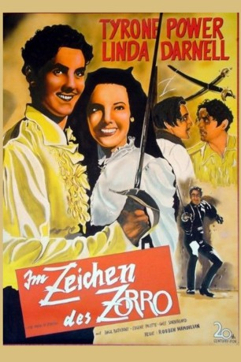

#9688 Im Zeichen des Zorro
Alternativ: The Mark of Zorro
Auszeichnungen: für 1 Oscars nominiert
 
 IMDB-Wertung: 7.6 / 10
IMDB-Wertung: 7.6 / 10  Metascore: 0
Metascore: 0 
Zu Beginn des 19. Jahrhunderts geht es den Bauern in Kalifornien schlecht. Der amtierende Gouverneur Don Luis Quintero nutzt seine Machtposition gnadenlos zu seinem eigenen Vorteil aus. Das geht Don Diego Vega gegen den Strich, der aufgrund der Bitte seines Vaters Don Alejandro von Spanien aus nach Kalifornien gereist ist. Deswegen beschließt Diego, sich nachts in die Figur des rächenden Zorros zu verwandeln, der maskiert und mit flinkem Degen gegen die Tyrannei Quinteros vorgeht. Vor allem dessen militärischer Führer Captain Esteban Pasquale steht auf der Abschussliste Zorros. Während die Machthaber versuchen, das Problem Zorro in den Griff zu bekommen, bahnt sich eine Liebesgeschichte zwischen Don Diego und Quinteros Nichte Lolita an, die ihr Herz an Diego verliert, nachdem sie weiß, dass er auch Zorro ist.
Jahr: 1940
Dauer: 93 Minuten
FSK: 12
Land: USA Studio: Twentieth Century-Fox Film CorporationTonspuren:
Untertitel:
Auflösung: 1080p (1424x1080) Größe: 6707 MB
Genre: Action, Abenteuer, Western, Liebe
Regisseur: Rouben Mamoulian
Drehbuch: John Taintor Foote, Garrett Fort, Bess Meredyth, Johnston McCulley
Soundtrack: Alfred Newman, David Buttolph, Hugo Friedhofer, Cyril J. Mockridge
Darsteller:
- Tyrone Power als Diego
- Linda Darnell als Lolita Quintero
 Basil Rathbone als Capt. Esteban Pasquale
Basil Rathbone als Capt. Esteban Pasquale- Gale Sondergaard als Inez Quintero
- Eugene Pallette als Fray Felipe
- J. Edward Bromberg als Don Luis Quintero
- Montagu Love als Don Alejandro Vega
- Janet Beecher als Senora Isabella Vega
- George Regas als Sgt. Gonzales
 Chris-Pin Martin als Turnkey
Chris-Pin Martin als Turnkey Robert Lowery als Rodrigo
Robert Lowery als Rodrigo Belle Mitchell als Maria
Belle Mitchell als Maria- Frank Puglia als Propietor
- Pedro de Cordoba als Don Miguel
- Guy D'Ennery als Don Jose
 Stanley Andrews als Commanding Officer (uncredited)
Stanley Andrews als Commanding Officer (uncredited)- Fortunio Bonanova als Sentry (uncredited)
- Ralph Byrd als Student / Officer (uncredited)
- Robert Conway als Student / Officer (uncredited)
 Gino Corrado als Caballero (uncredited)
Gino Corrado als Caballero (uncredited)- Franco Corsaro als Orderly (uncredited)
 Jean Del Val als Sentry (uncredited)
Jean Del Val als Sentry (uncredited)- Fred Malatesta als Sentry (uncredited)
- Ted North als Student / Officer (uncredited)
- Charles Stevens als José (uncredited)
- Rafael Storm als Diego's Manservant (uncredited)
- Paul Sutton als Morales (uncredited)
- Harry Worth als Caballero (uncredited)
- John Bleifer als Pedro
- Eugene Borden als Officer of the Day
- Robert Cauterio als Manuel (uncredited)
- Bob Cautiero als Groom (uncredited)
- Andre Cuyas als Servant (uncredited)
- Joseph DeVillard als Sentry (uncredited)
- Art Dupuis als Soldier (uncredited)
- William Edmunds als Peón Selling Cocks (uncredited)
- George Ghermanoff als Servant (uncredited)
- Victor Kilian als Boatman (uncredited)
- Francisco Marán als Officer (uncredited)
- Francisco Moreno als Peon (uncredited)
- Hector V. Sarno als Moreno (uncredited)
- George Sorel als Caballero (uncredited)
- Lucio Villegas als Caballero (uncredited)
- Frank Yaconelli als Don Alejandro's Servant (uncredited)
Datei: X:\4-Tetralogie(M-Z)\Zorro\Im Zeichen des Zorro (1940, FSK12, 1424x1080).mkv seit 04.10.2018
Festplatte: HD Collection-3(N-Z)-6(A-Z)
 Es gibt insgesamt 7 Filme in der Gruppe '4-Tetralogie(M-Z)\Zorro'
Es gibt insgesamt 7 Filme in der Gruppe '4-Tetralogie(M-Z)\Zorro'